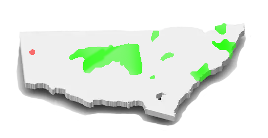
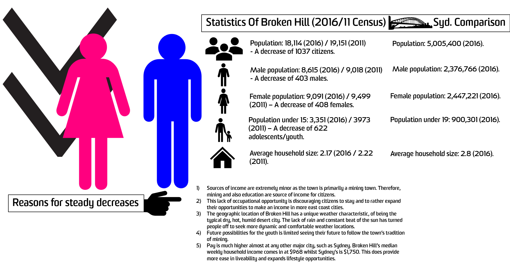
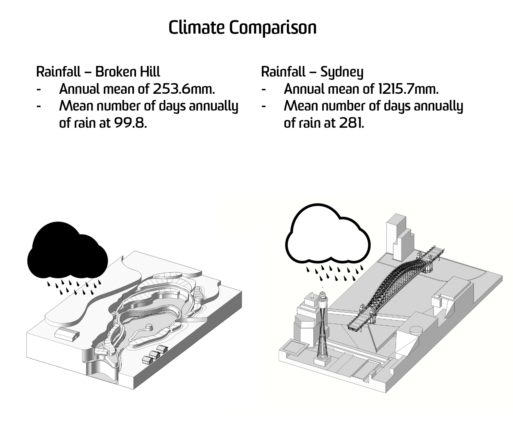
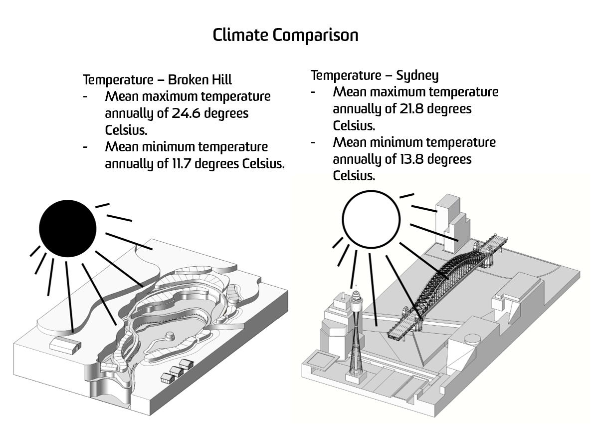
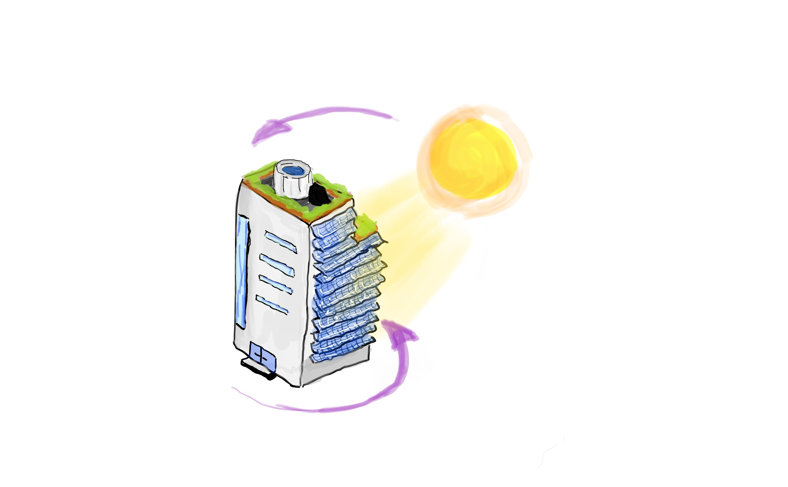
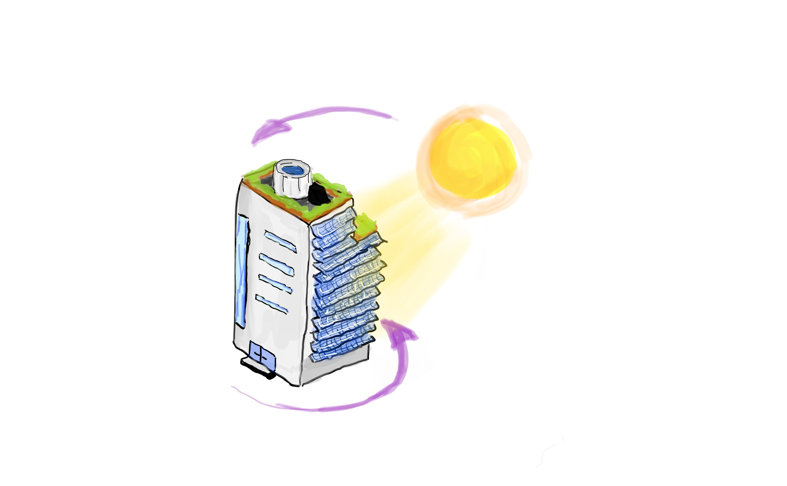

Diagrams
James Pifat - z5213548
The following maps showcase the spread of male and female workers within the mining industry of New South Wales. There is an obvious saturation of such occuaption in rural New South Wales, as the land provides a rich source of minerals, in turn providing finance to the towns. In particular, Broken Hill, known as an mining town and having its foundations built on mining is beginning to lose interest in the practice. Below are two diagrams showcasing what reasons and why people are leaving Broken Hill and most rural towns alike, to find life on the east coast in city areas like Sydney.
Above showcases the Males across NSW in mining, whilst below displays Females.    
Therefore, as seen in the diagrams, both oppurtunity and weather are acting as a deterent for individuals to remain civlised in Broken Hill and also to attrat newer individuals. Hence, the proposal of a waterpark hybrid city comes into play. Gaining inspiration from desert like cities of Dallas and Dubai, these cities have thrived off the manipulation of the sun's energy to provide a renewable source of power for the city via solar panels. Hence, any issue of a lack of elecetricty/power to provide the use of basic machinery and neccessities is solved. For water, man made lakes and damns were constructed in the mentioned cities, however, hypothetically speaking, Broken Hill's use of mining industry is only limited for a source of income. And therefore, a waterpark city/water damn can simaltaneously fucntion as the depths of the damns can store hundreds of thousands of litres of water, which can be continously recycled and purififed with the installation of appropriate machines. Below are diagrams that showcase how this can be managed:
 

The two drawings here display how the idea of climate can be puppeted by the use of solar panels on buildings in which host a backside of solar panels, whislt the parrallel side is as normal, with windows as an example. Therefore, the buildings in which are erected around the old quarry; now a waterpark/damn, will have a 360 degrees rotation, with heat sensors dictating what angle the building is facing; the solar panel will always face the sun whilst the window side is against it not being penetrated by the undesirable UV rays. This is turn sucks in as much renewable, effective, efficitn and cost and environmentally friendly energy.